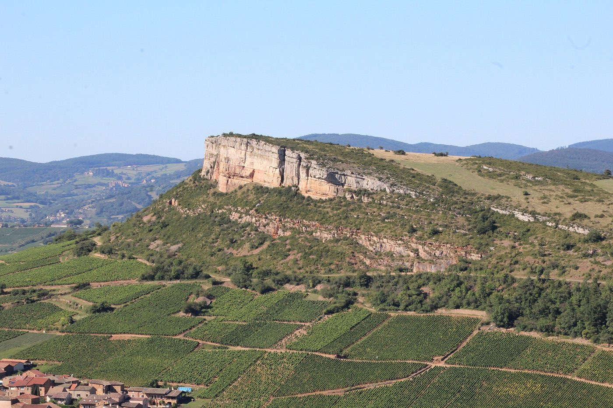
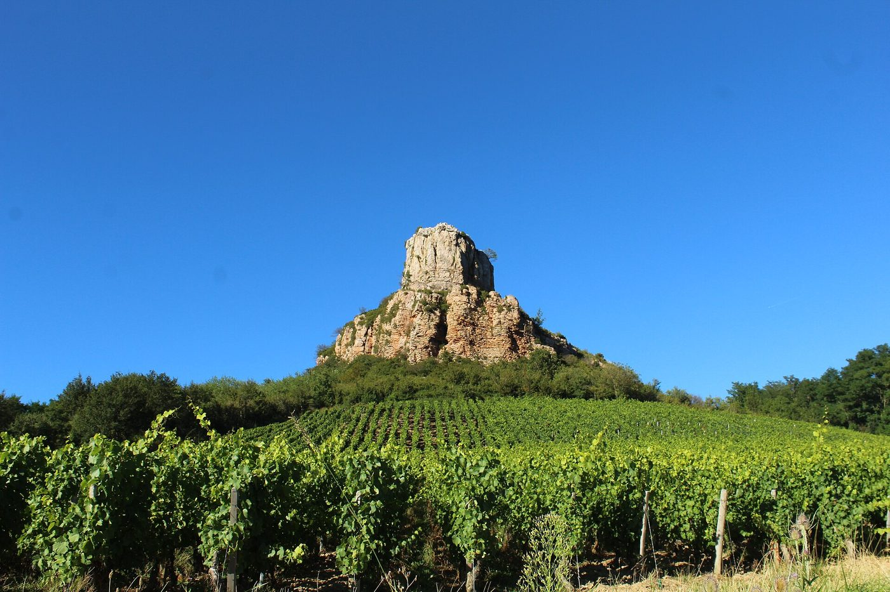
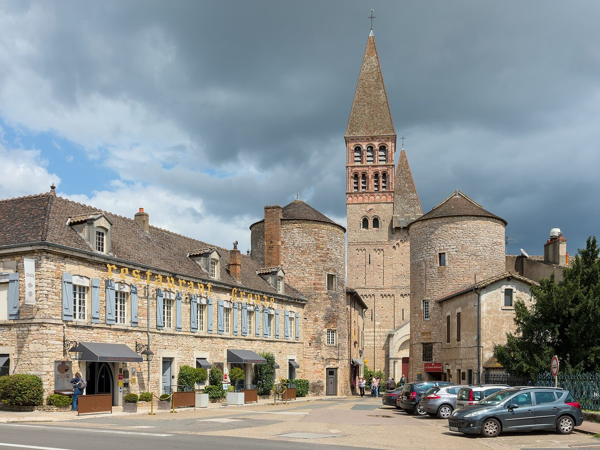
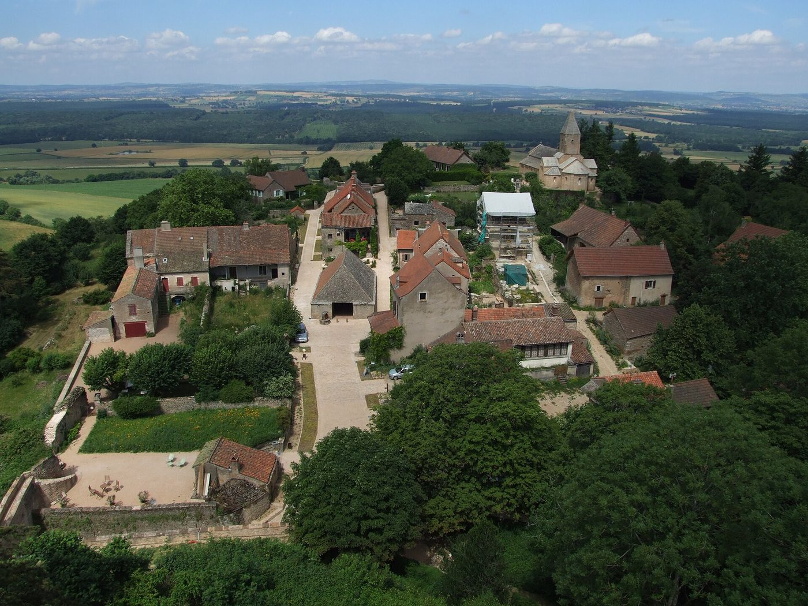
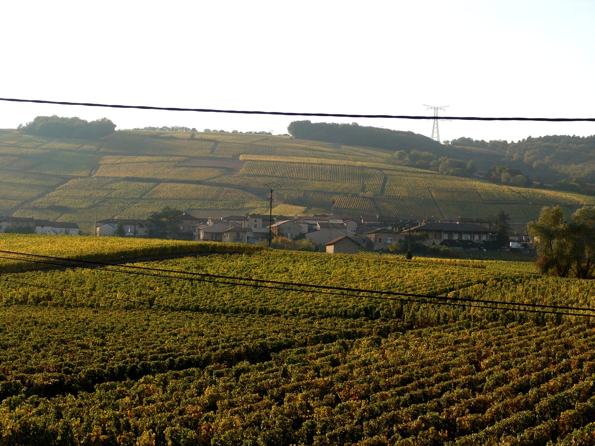
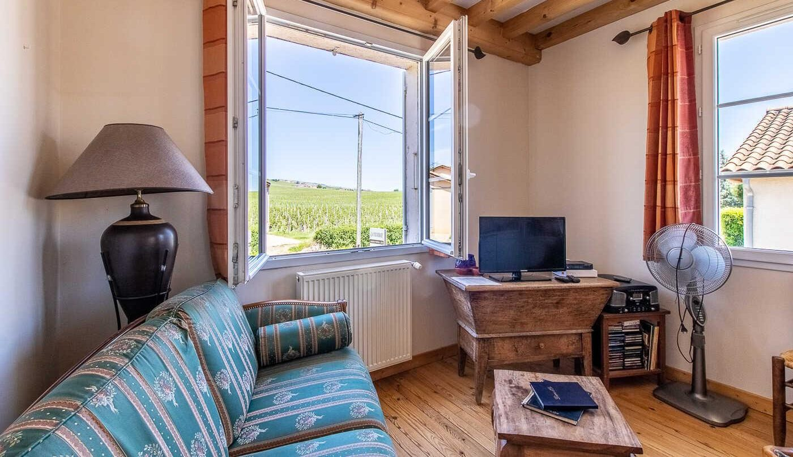

Accueil · Fuissé et alentours
Le sud de la Bourgogne, depuis les vignes
Les roches de Solutré et de Vergisson, les abbayes romanes et la Saône, à moins d’une heure.

Fuissé, fleuron du Pouilly-Fuissé
La Vigneraie est à deux pas du centre du village : on part à pied entre les vignes, on passe devant le lavoir du XVIIe siècle et l’église, on suit le sentier qui monte vers les coteaux.

La Roche de Solutré, à 14 minutes
Le rocher qui domine le vignoble, labellisé Grand Site de France, avec sa voisine la Roche de Vergisson. Du sommet, la vue s’étend sur la vallée de la Saône.

L’abbaye de Cluny, à 23 minutes
La cité abbatiale, ses tours et ses ruelles médiévales, sur la route des églises romanes du sud de la Bourgogne.

Tournus, à 32 minutes
L’abbaye Saint-Philibert et la vieille ville au bord de la Saône, pour une journée entre art roman et bonnes tables.

Brancion, à 41 minutes
Le village médiéval perché, son château et son église romane, au milieu des collines du Mâconnais.

À vélo dans les vignes
La Voie Verte de la Grande Boucle de Bourgogne du Sud passe à 3,5 km, la Voie Bleue le long de la Saône à 9 km : le local à vélos de la maison vous attend au retour.
Les adresses de Sophie
- L’O des VignesCuisine gastronomique servie sous les châtaigniersÀ 500 mètres, à pied
- La Courtille de SolutréCuisine bistrot raffinée dans un cadre sympathiqueÀ 3 km
- La Table de ChaintréUne adresse savoureuse dans un village pittoresqueÀ 3 km
- Auberge de la Patte d’OieDécor chaleureux et cuisine de saisonÀ 2,5 km, à vélo
- Le Saint LaurentBistrot gourmand avec vue sur la SaôneÀ 5 km
- Georges Blanc, VonnasLe village gastronomiqueÀ 27 minutes
Avec plaisir, Sophie vous conseille et réserve pour vous.

Le soir, retour à La Vigneraie
Après une journée de visites, le salon et la terrasse vous attendent, face aux vignes.
Vos nuits, en direct
Choisissez vos dates sur le planning : vous voyez tout de suite ce qui est libre et le prix de votre séjour, taxe de séjour comprise, sans frais de plateforme.
Une question avant de réserver ? Écrivez à Sophie
- 1Vos datesle planning est à jour, les nuits prises sont fermées
- 2Votre chambrePouilly-Fuissé, Saint-Véran ou toute la maison
- 3Vos optionsvotre animal de compagnie
- 4Vos coordonnéesla demande arrive chez Sophie
Avant de réserver
Comment réserver ?
En ligne, avec le bouton « Réserver » : vous choisissez vos dates sur le planning, une chambre ou la maison entière : le prix du séjour s’affiche aussitôt, taxe de séjour comprise. Vous pouvez aussi appeler Sophie au 06 08 31 56 79.
Le petit déjeuner est-il compris ?
Oui. Sophie vous apporte le matin un petit déjeuner copieux, que vous prenez à la table de la pièce de vie réservée aux hôtes. Pour un séjour à la semaine, il se règle à part : demandez à Sophie.
Peut-on louer toute la maison ?
Oui : la maison entière (les deux chambres, la mezzanine et la pièce de vie) se loue 230 € la nuit, de 4 à 6 personnes, petits déjeuners compris. Pour un séjour à la semaine ou les deux chambres sur plusieurs nuits, Sophie propose un tarif préférentiel : appelez-la.
Peut-on venir avec des enfants ?
Oui. Sous le toit, par un escalier en colimaçon, la mezzanine de 35 m² accueille deux enfants pour 20 € la nuit, petit déjeuner compris. Elle se loue avec une chambre : précisez-le à Sophie en réservant.
Les animaux sont-ils acceptés ?
Oui, votre animal de compagnie est le bienvenu, avec un supplément de 5 €.
Peut-on visiter le domaine ?
Sophie est vigneronne : la maison est sur le petit domaine familial qu’elle cultive en bio avec son mari. Une visite et une dégustation sont possibles sur demande, pendant votre séjour.
Et à vélo ?
Un local à vélos fermé vous attend, avec le parking privé. La Voie Verte de la Grande Boucle de Bourgogne du Sud passe à 3,5 km et la Voie Bleue, le long de la Saône, à 9 km.